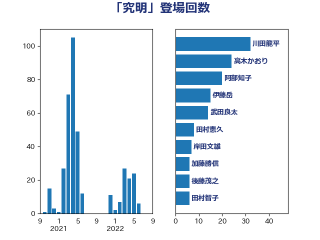

単語「究明」

| 川田龍平 | 立憲民主党 | 32 回 |
| 高木かおり | 日本維新の会 | 24 回 |
| 阿部知子 | 立憲民主党 | 20 回 |
| 伊藤岳 | 日本共産党 | 15 回 |
| 武田良太 | 自由民主党 | 14 回 |
| 田村憲久 | 自由民主党 | 8 回 |
| 岸田文雄 | 自由民主党 | 7 回 |
| 加藤勝信 | 自由民主党 | 6 回 |
| 後藤茂之 | 自由民主党 | 6 回 |
| 田村智子 | 日本共産党 | 6 回 |
| 梶山弘志 | 自由民主党 | 5 回 |
| 秋野公造 | 公明党 | 5 回 |
| 自見はなこ | 自由民主党 | 5 回 |
| 小森卓郎 | 自由民主党 | 4 回 |
| 山本博司 | 公明党 | 4 回 |
| 斉藤鉄夫 | 公明党 | 4 回 |
| 渡辺周 | 立憲民主党 | 4 回 |
| 福島みずほ | 社会民主党 | 4 回 |
| 秋本真利 | 自由民主党 | 4 回 |
| 上川陽子 | 自由民主党 | 3 回 |
| 梅村みずほ | 日本維新の会 | 3 回 |
| 赤羽一嘉 | 公明党 | 3 回 |
| 中野洋昌 | 公明党 | 2 回 |
| 古川元久 | 国民民主党 | 2 回 |
| 岩渕友 | 日本共産党 | 2 回 |
| 岸信夫 | 自由民主党 | 2 回 |
| 後藤祐一 | 立憲民主党 | 2 回 |
| 柚木道義 | 立憲民主党 | 2 回 |
| 石井章 | 日本維新の会 | 2 回 |
| 笠井亮 | 日本共産党 | 2 回 |
| 米山隆一 | 立憲民主党 | 2 回 |
| 菅義偉 | 自由民主党 | 2 回 |
| 萩生田光一 | 自由民主党 | 2 回 |
| 赤嶺政賢 | 日本共産党 | 2 回 |
| 野村哲郎 | 自由民主党 | 2 回 |
| こやり隆史 | 自由民主党 | 1 回 |
| たがや亮 | れいわ新選組 | 1 回 |
| 井上信治 | 自由民主党 | 1 回 |
| 伊藤孝江 | 公明党 | 1 回 |
| 佐々木紀 | 自由民主党 | 1 回 |
| 勝部賢志 | 立憲民主党 | 1 回 |
| 吉田宣弘 | 公明党 | 1 回 |
| 吉田統彦 | 立憲民主党 | 1 回 |
| 吉良よし子 | 日本共産党 | 1 回 |
| 堤かなめ | 立憲民主党 | 1 回 |
| 塩川鉄也 | 日本共産党 | 1 回 |
| 塩田博昭 | 公明党 | 1 回 |
| 山岸一生 | 立憲民主党 | 1 回 |
| 山崎誠 | 立憲民主党 | 1 回 |
| 山添拓 | 日本共産党 | 1 回 |
| 山田太郎 | 自由民主党 | 1 回 |
| 川合孝典 | 国民民主党 | 1 回 |
| 庄子賢一 | 公明党 | 1 回 |
| 打越さく良 | 立憲民主党 | 1 回 |
| 斎藤嘉隆 | 立憲民主党 | 1 回 |
| 本田顕子 | 自由民主党 | 1 回 |
| 杉尾秀哉 | 立憲民主党 | 1 回 |
| 枝野幸男 | 立憲民主党 | 1 回 |
| 柴田巧 | 日本維新の会 | 1 回 |
| 河野太郎 | 自由民主党 | 1 回 |
| 泉健太 | 立憲民主党 | 1 回 |
| 津島淳 | 自由民主党 | 1 回 |
| 浅野哲 | 国民民主党 | 1 回 |
| 浜口誠 | 国民民主党 | 1 回 |
| 清水真人 | 自由民主党 | 1 回 |
| 清水貴之 | 日本維新の会 | 1 回 |
| 牧原秀樹 | 自由民主党 | 1 回 |
| 田島麻衣子 | 立憲民主党 | 1 回 |
| 田村まみ | 国民民主党 | 1 回 |
| 田村貴昭 | 日本共産党 | 1 回 |
| 白石洋一 | 立憲民主党 | 1 回 |
| 石井苗子 | 日本維新の会 | 1 回 |
| 石垣のりこ | 立憲民主党 | 1 回 |
| 石橋通宏 | 立憲民主党 | 1 回 |
| 礒崎哲史 | 国民民主党 | 1 回 |
| 紙智子 | 日本共産党 | 1 回 |
| 藤井比早之 | 自由民主党 | 1 回 |
| 足立敏之 | 自由民主党 | 1 回 |
| 酒井庸行 | 自由民主党 | 1 回 |
| 野田聖子 | 自由民主党 | 1 回 |
| 長浜博行 | 無所属 | 1 回 |
| 階猛 | 立憲民主党 | 1 回 |
| 青木愛 | 立憲民主党 | 1 回 |
| 鰐淵洋子 | 公明党 | 1 回 |